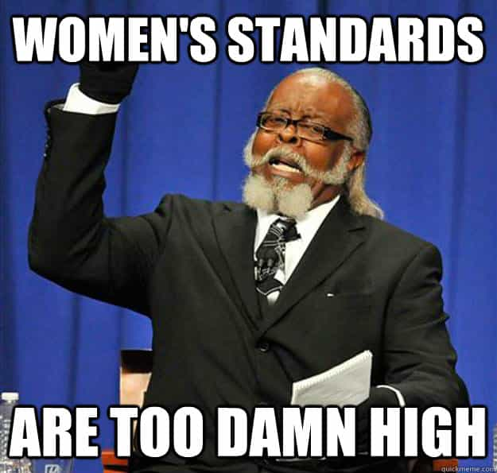
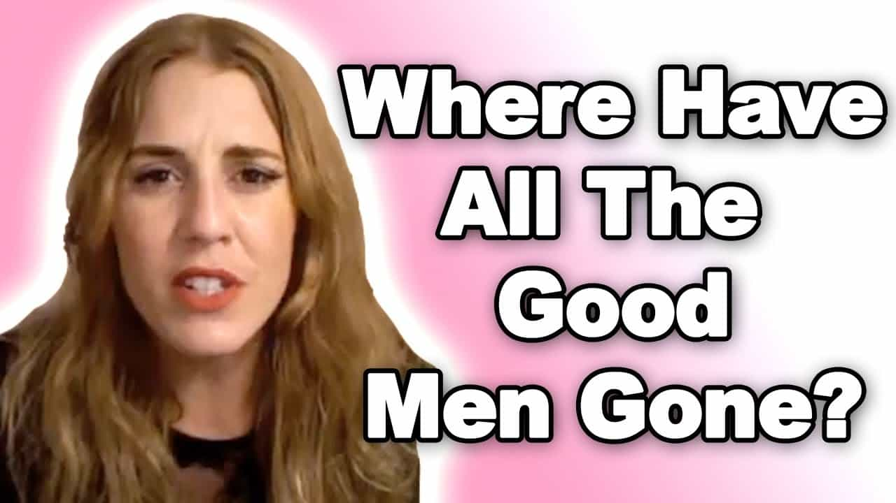

The morass that we call today’s sexual marketplace is leading women to ever higher expectations of men, usually with little being given to men in return. These expectations are now so inflated that women are willing to pay thousands of dollars for an ideal but apparently totally elusive partner through matchmaking agencies, even though they already get attention from hundreds—if not thousands—of men yearly. Having been fed a media diet of “never settle” and “you deserve the best,” many women are obviously never settling and refusing to accept what they presently have as the best they can get.
One woman, Australian fitness model and professional Instagrammer Zoë Daly, paid AUD$5,000 (ca. US$4,000) to be matched with high-status, ambitious men. And this is just the tip of the iceberg. Whether through more high-brow, non-seedy matchmaking agencies, the route Daly “thankfully” took, or via less polite avenues like SeekingArrangement.com, women are literally reaching for the stars.
Zoë Daly’s 200,000+ Instagram followers and her constant time around buff men haven’t enabled her to find a male partner. Her standards are clearly too high.
Daly, an 8/10 in my book when she’s not overly striated for competitions, has just been awarded most of the money she paid an agency after having a “bad date” and taking the matter to the New South Wales Civil and Administrative Tribunal, based in Sydney. I will make no major comments about her claims against the matchmaking agency. From the facts I have read about, she did indeed not get the service she was promised.
All this aside, one has to wonder about why Daly needed the agency in the first place and why plenty of other women do, too. What exactly was the problem with finding a male suitor amongst her 200,000+ Instagram followers? Or why couldn’t she pick one guy from the masses of presumably muscled men she comes across in the world of being a fitness model?
Hamsters gonna hamster

The sad thing is that men and women used to meet rather normally, even online in the first years of the internet, and early. Then they would stay together, at least until the divorce five, ten, or twenty years later. Nowadays, usually because of a woman’s inflated expectations, the question of “What’s enough in a man?” is rarely settled. Hence the large number of never married women entering their mid-thirties and forties childless, but having had more relationships than years in their lives.
I learnt from this article that Zoë Daly was 32 last year, so by the end of this year she will have turned 33, possibly 34. She’s a number of years older than me, but it’s fair to say that her parents, like mine, probably married in their early to mid-twenties. Even before the marriage, they had found a long-term boyfriend or girlfriend when they were just past 20.
A woman like this fitness model is literally 10-15 years behind her parents’ generation in finding a mate and settling down. Added to this game of incessant catch-up is a seemingly insatiable desire for “the best,” a desire that leads to standards that perhaps 0.1% of the male population in her age bracket can possibly fulfill. And this says nothing about whether she herself is in the top 0.1% range for women. With her Instagram account alone, her hypothetical reach in trying to find a mate is about 1,000 times more than her mother’s was. And still she’s not happy and still she hasn’t found someone!
Even women not forking out thousands of dollars for matchmakers are thinking similarly

A lot of women lack the funds to pay a matchmaking agency $5,000 or have priorities that see their money spent elsewhere (shoes, travel, chihuahua grooming, or, God forbid, helping themselves become marriageable women). Yet do not think for a second that countless other girls are not operating according to a comparable mindset as Zoë Daly.
“Where have all the good men gone?” is a refrain women’s magazines and more radically feminist sources have been pumping out for years. It’s the same refrain that prompts a majority of women on Tinder to exclude the majority of the men they swipe, or a majority of women in the real world to ignore the advances of the majority of men who approach them.
Though we might sometimes see more exaggerated, salient instances of the distorted sexual marketplace at play, like a good-looking but not extraordinarily beautiful woman paying a hefty $5,000 for a matchmaking service, related trends in lopsided male-female dynamics are manifested all the time in more banal ways. The average girl at the club is swatting away many a male opportunity, just like Zoë Daly probably is. So, too, is the college junior hooking up incessantly, all whilst complaining that “Mr. Right” constantly evades her.
Without bringing much to the table anymore, women are nevertheless demanding more and more from the men who chase them. As a result, there’s little wonder that women like Daly are rarely, if ever satisfied romantically.
Read More: Is This “Inspiration To Women” Faking Cancer And Stealing Hundreds Of Thousands Of Dollars?